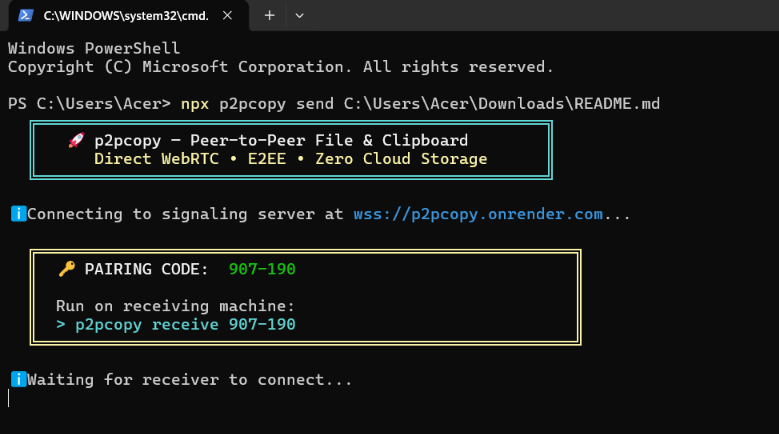
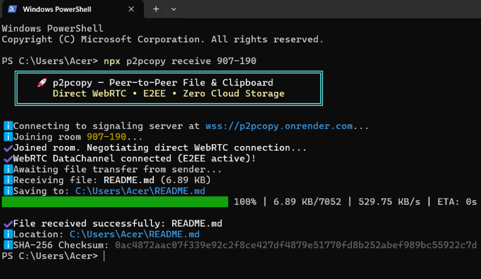
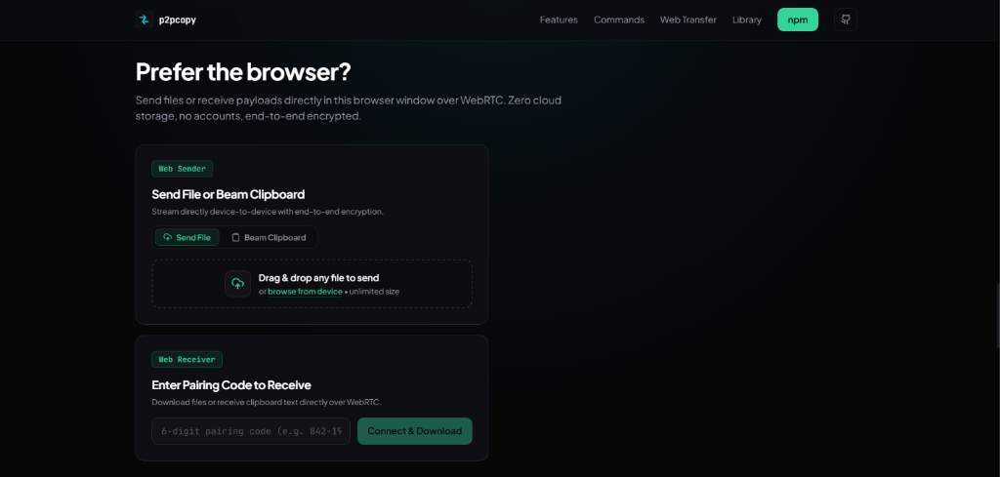

Building p2pcopy: Zero-Cloud Peer-to-Peer Streaming with WebRTC
p2pcopy is a high-performance, open-source peer-to-peer transfer engine that streams files and clipboard payloads directly between developer terminals and web browsers over WebRTC DataChannels. There are zero cloud storage buckets, no accounts, and no intermediate file uploads. An ephemeral signaling exchange connects peers via an intuitive 6-digit room code, after which all data streams directly device-to-device with end-to-end DTLS 1.3 / SCTP encryption.

The Problem: The Insecurity of Cloud Intermediaries
Sharing files or terminal snippets between developer machines, headless VPS instances, and mobile devices routinely relies on third-party cloud services—such as WeTransfer, Google Drive, Slack, or temporary S3 buckets. This standard workflow introduces severe limitations:
- Secret Leakage: Sensitive payloads (SSH keys, environment configs, database snapshots, confidential code) sit unencrypted on remote third-party hard drives.
- Context Switching: Developers must leave the terminal, open a browser, sign in, generate upload links, and copy URLs across channels.
- Arbitrary Size & Bandwidth Caps: Free tiers throttle speeds, impose strict file size limits, or delete assets before colleagues download them.
Core Engineering Principles
To solve this, p2pcopy was architected around four non-negotiable engineering principles:
- Zero Cloud Storage & Zero Knowledge: No cloud disks, no databases. The signaling server is an in-memory WebSocket broker that exists solely to exchange SDP strings and ICE candidates. Once the DataChannel connects, the room is destroyed immediately from RAM.
- Full Terminal ⇄ Web Interoperability: Terminal endpoints use native C++ WebRTC bindings (
node-datachannel), while browsers leverage standard W3CRTCPeerConnection. Both use identical wire formats (DTLS 1.3 / SCTP). - Constant-Memory Streaming with Backpressure: Files are read as continuous streams divided into 64KB binary chunks with low-water mark throttling (
bufferedAmountLowThreshold). This enables multi-gigabyte transfers with less than 20MB of RAM. - Cryptographic Checksum Verification: Senders and receivers compute incremental SHA-256 hashes concurrently during transit to guarantee zero corruption or bit rot.
System Topology & WebRTC Architecture
p2pcopy combines a lightweight, ephemeral signaling relay with direct peer-to-peer WebRTC DataChannels. Payloads never touch any intermediate server — neither the signaling server nor any cloud bucket ever sees your files or clipboard data:
Protocol Handshake & Sequence Flow
Below is the live protocol flow executed during a p2pcopy transfer session:
(wss://p2pcopy.onrender.com) actor B as Receiver (CLI / Browser) Note over A,S: 1. Ephemeral Room Creation A->>S: create_room("842-194") S-->>A: room_created Note over A: Generates SDP Offer and gathers ICE candidates Note over B,S: 2. Peer Rendezvous B->>S: join_room("842-194") S-->>B: room_joined S-->>A: peer_joined Note over A,B: 3. Ephemeral SDP & ICE Exchange A->>S: send_signal(SDP Offer + ICE) S->>B: relay_signal(SDP Offer + ICE) Note over B: Sets Remote SDP Offer and creates SDP Answer B->>S: send_signal(SDP Answer + ICE) S->>A: relay_signal(SDP Answer + ICE) Note over A,B: 4. Direct E2EE WebRTC DataChannel (DTLS 1.3 / SCTP) A--x S: Disconnect signaling WebSocket B--x S: Disconnect signaling WebSocket Note over S: Room "842-194" auto-purged from memory Note over A,B: 5. Direct Zero-Cloud Stream A->>B: Metadata Handshake (fileName, fileSize, mimeType, isClip) loop 64KB Chunk Streaming with Backpressure A->>B: Binary Chunk (64KB payload) Note over A: Throttled via bufferedAmountLowThreshold Note over B: Streams chunks into disk/RAM + computes SHA-256 end A->>B: Transfer Complete (SHA-256 Checksum) Note over B: Validates checksum & saves to disk or OS pasteboard
4 Cross-Platform Transfer Combinations
Because p2pcopy provides both a lightweight CLI and a zero-install browser interface, it supports all four communication vectors:
| Combination | Flow | Real-World Use Case |
|---|---|---|
| Terminal ➔ Terminal | p2pcopy send <file> ➔ p2pcopy receive <code> |
Machine-to-machine streaming between developer terminals. |
| Terminal ➔ Browser | p2pcopy send <file> ➔ Web tab |
Beam archives from a headless cloud server directly to a phone or laptop browser. |
| Browser ➔ Terminal | Web tab ➔ p2pcopy receive <code> |
Teammate drops a file in their browser; you receive it directly into your terminal folder. |
| Browser ➔ Browser | Web tab ➔ Web tab | 100% zero-install, direct peer-to-peer web transfers between any two devices. |
Chunked Streaming with Backpressure Flow Control
WebRTC DataChannels operate over SCTP. Without flow control, blasting gigabytes of data into a socket will rapidly overflow kernel memory or trigger unrecoverable packet drops. p2pcopy implements precise backpressure throttling using bufferedAmountLowThreshold:
// Chunked SCTP streaming with bufferedAmountLow backpressure flow control
const streamFileOverDataChannel = async (channel: RTCDataChannel, fileStream: fs.ReadStream) => {
const CHUNK_SIZE = 64 * 1024; // 64KB SCTP chunks
channel.bufferedAmountLowThreshold = 256 * 1024; // 256KB low-water mark
for await (const chunk of fileStream) {
if (channel.bufferedAmount > 1024 * 1024) { // Pause read when buffer reaches 1MB
await new Promise((resolve) => {
channel.onbufferedamountlow = () => {
channel.onbufferedamountlow = null;
resolve(true);
};
});
}
channel.send(chunk);
}
};Six Commands, Zero Config
p2pcopy provides six streamlined CLI commands designed for maximum developer ergonomics:
p2pcopy send <file>: Stream files or archives directly with real-time transfer progress and SHA-256 verification.p2pcopy receive <code>: Enter the 6-digit pairing code to download incoming files directly into your current directory.p2pcopy clip: Beam your system pasteboard or pipe command output (cat id_rsa.pub | p2pcopy clip).p2pcopy clip get <code>: Write directly to system pasteboard or stream to stdout for pipelines (p2pcopy clip get 842-194 --no-copy | jq .).p2pcopy signal --port 9000: Self-host a zero-storage WebSocket signaling relay on a private or air-gapped network.--ice <urls...>: Traverse strict corporate symmetric NATs, cellular CGNATs, or firewalls with custom STUN/TURN relays.
Sender Experience: 6-Digit Ephemeral Pairing
Whether initiated from a developer terminal with npx p2pcopy send <file> or dragged into the browser interface at p2pcopy.vercel.app, the sender registers an ephemeral room and displays a 6-digit pairing code. As soon as the receiver joins, chunked streaming begins:

Receiver Experience: Instant Download & Verification
The receiver inputs the 6-digit code or connects via URL. Chunks stream directly into local memory or disk, while an ongoing SHA-256 hash is verified against the sender's integrity digest before final write:

In-Browser Web Application: Zero-Install Transfers
For peers on devices without terminal access (such as mobile phones, tablets, or non-technical teammates), the live web app at p2pcopy.vercel.app provides direct browser-to-browser and terminal-to-browser transfers:
- Web Sender: Drag & drop any file or paste clipboard text to immediately generate an ephemeral 6-digit code.
- Web Receiver: Enter the 6-digit pairing code to download streamed files or copy beamed clipboard content directly with 1 click.

Programmatic Library API
In addition to the CLI and web app, p2pcopy is distributed as a typed TypeScript library for automated peer-to-peer data pipelines:
import { WebRTCPeer, SignalingClient, FileSender } from "p2pcopy";
// 1. Connect to signaling relay
const signal = new SignalingClient("wss://p2pcopy.onrender.com");
await signal.connect();
await signal.createRoom("842-194");
// 2. Initialize WebRTC peer
const peer = new WebRTCPeer({
name: "sender",
isInitiator: true,
roomId: "842-194",
signalingClient: signal,
});
await peer.start();
// 3. Stream file directly device-to-device
peer.on("connected", async (dataChannel) => {
const sender = new FileSender({
filePath: "./dataset.tar.gz",
dataChannel,
showProgress: true,
});
await sender.send();
});Systems Insight: 3-Tier NAT Traversal
[Tier 1: Direct LAN / UPnP]
│ (Zero NAT, Maximum Speed)
▼
[Tier 2: STUN Hole-Punching]
│ (Succeeds on ~85-90% of home & office NATs)
▼
[Tier 3: Encrypted TURN Blind Relay]
(Guaranteed delivery for Symmetric NATs, CGNAT, & strict enterprise firewalls)
When direct UDP hole-punching fails due to strict enterprise symmetric NATs, p2pcopy automatically falls back to an encrypted TURN relay. Crucially, TURN relays only forward encrypted DTLS frames—no plaintext payload data is ever readable by the relay server.